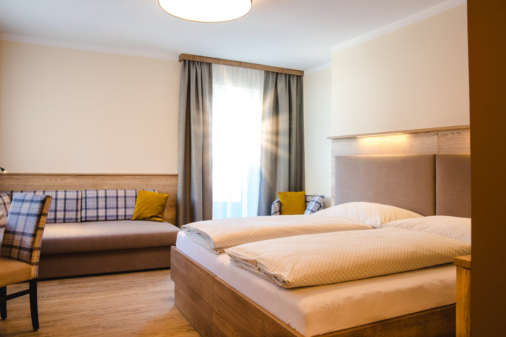

Im Zimmer
Alle Zimmer verfügen über Dusche, WC, Telefon, Safe und Kabel-TV – in warmem Holz und mit liebevoller Einrichtung.
Hotel
In jedem unserer 27 Zimmer haben wir Wert auf liebevolle Einrichtung gelegt, die charmant und besonders eine Wohlfühl-Atmosphäre zaubert – mitten im Ortszentrum von Kalsdorf, mit Wirtshaus und Frühstück im selben Haus.

Die Zimmer
… und abends möchte sich der Mond am liebsten dazu kuscheln. In jedem unserer 27 Zimmer haben wir Wert auf liebevolle Einrichtung gelegt, die charmant und besonders eine Wohlfühl-Atmosphäre zaubert.
Neben Ein- und Zweibettzimmern gibt es ein eigenes Familien-Appartement. Ob Sie am Rücken schlafen, in Seitenlage oder lieber die ganze Nacht lang Krimis schmökern – wir wünschen uns nur eines: Jede Stunde Ihres Aufenthalts soll so angenehm wie möglich sein.
Preise und Verfügbarkeit: Zimmerpreise veröffentlicht das Haus nicht öffentlich – wir geben deshalb hier keine an. Bitte fragen Sie den aktuellen Preis für Ihren Zeitraum direkt an, wir antworten rasch.
Ausstattung
Alle Zimmer verfügen über Dusche, WC, Telefon, Safe und Kabel-TV – in warmem Holz und mit liebevoller Einrichtung.
Neben Ein- und Zweibettzimmern gibt es ein eigenes Appartement für Familien – bitte gleich bei der Anfrage angeben.
Wir verfügen über einen eigenen kleinen Fitnessraum, um sich wetterunabhängig fit zu halten.
Der nahe gelegene Murradweg eignet sich hervorragend für eine entspannende Radtour – Räder gibt es über unseren E-Bike-Verleih.
Schon vorab hineinschauen: Das Haus bietet einen 3D-Panorama-Rundgang durch Wintergarten und Doppelzimmer. In der neuen Website steht er direkt auf dieser Seite – ohne externen Dienst und ohne Cookie-Banner. Mehr zur Umgebung
Rundum
Der Gasthof Pendl liegt im Herzen von Kalsdorf bei Graz, im Bezirk Graz-Umgebung südlich der Landeshauptstadt.
Zimmer, Seminarraum und Verpflegung an einer Adresse – wer im Grazer Süden zu tun hat, muss abends nicht mehr weiterfahren.
Wird im Haus gefeiert, übernachten Ihre Gäste gleich dort, wo die Feier stattfindet. Fragen Sie Zimmerkontingente bitte gemeinsam mit der Feier an.
Eine Nächtigung im Ortszentrum, Abendessen im Wirtshaus, Frühstück im Haus – unkompliziert und ohne Umwege.
Der Murradweg führt über 457,7 km von Muhr im Lungau nach Bad Radkersburg – Kalsdorf ist eine gute Etappe. E-Bikes verleihen wir im Haus.
Adrenalinpark, Badesee Copacabana, Styria Karting, Luftfahrtmuseum und die Südsteirische Weinstraße liegen in wenigen Minuten Entfernung.
Der Flughafen Graz ist in wenigen Minuten mit dem Fahrzeug oder mit dem Taxi erreichbar.
Anfrage
Nennen Sie uns Zeitraum und Personenzahl – wir melden uns mit Verfügbarkeit und Preis zurück. Auf der bestehenden Website gibt es dafür bisher keine Online-Möglichkeit; genau das schließt dieses Formular.
Telefonisch: +43 3135 52 308